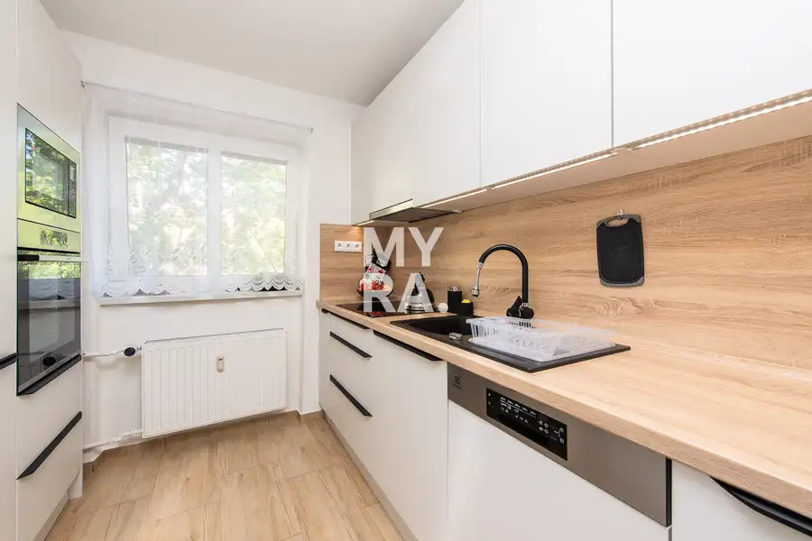
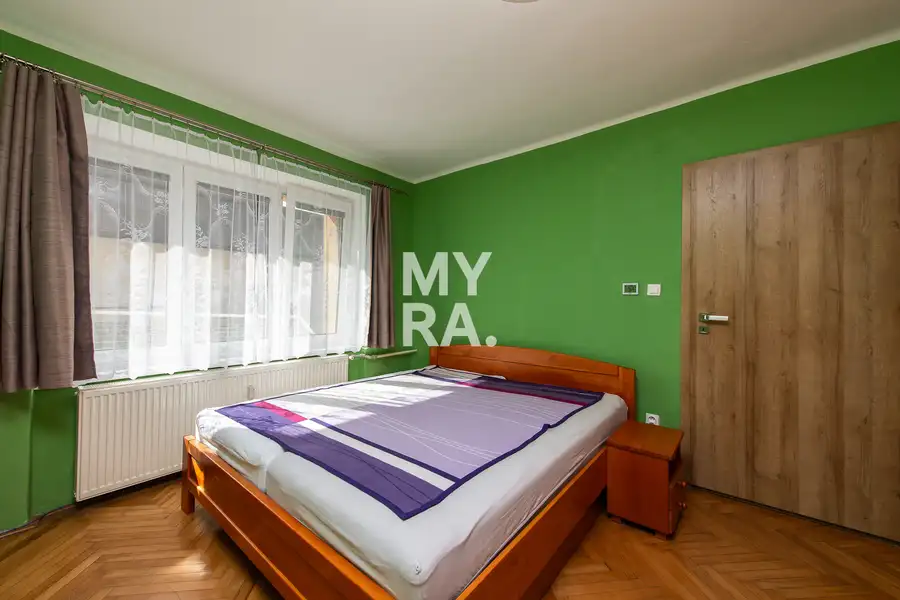
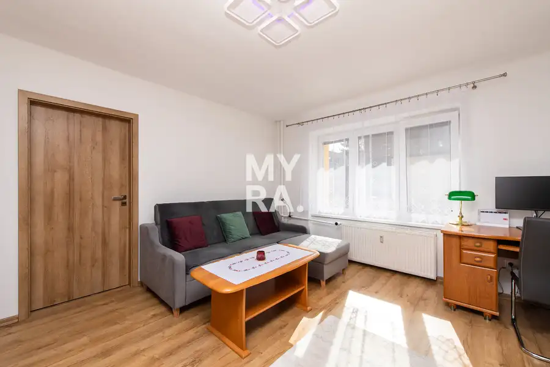
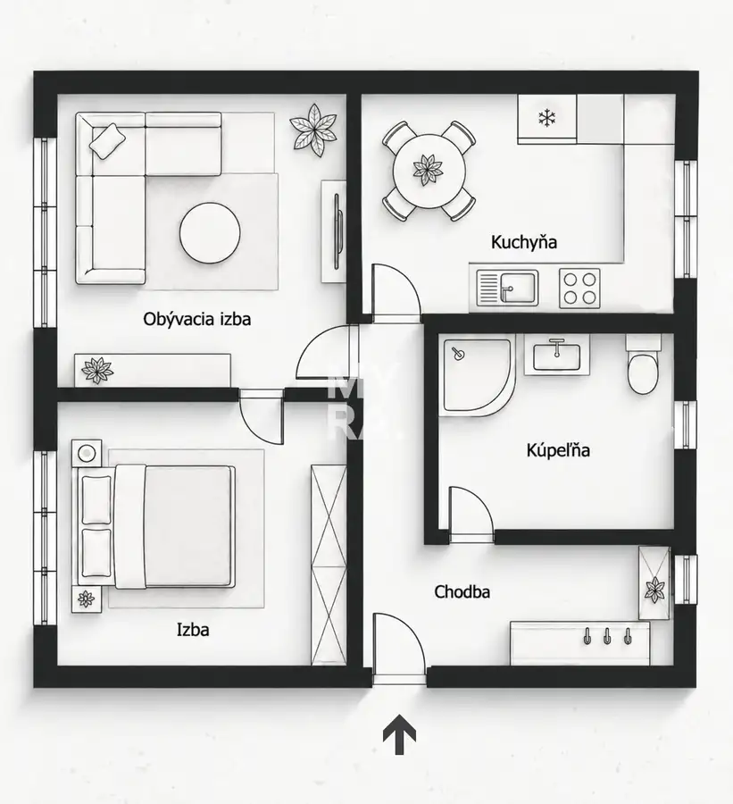
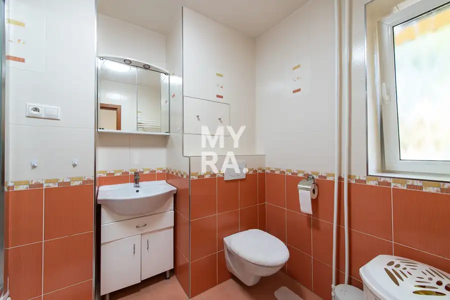
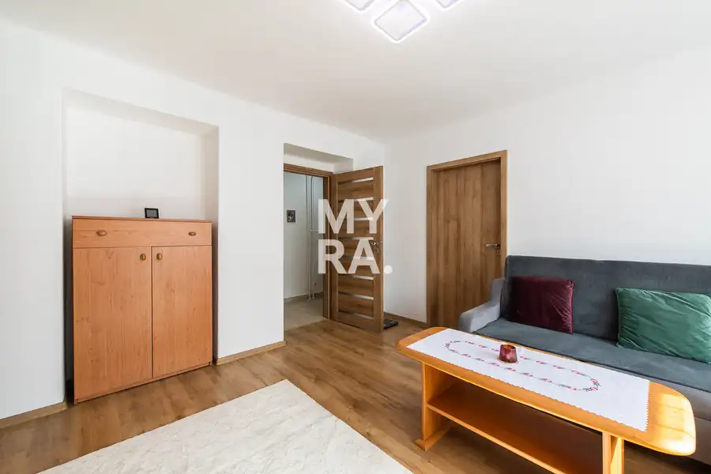
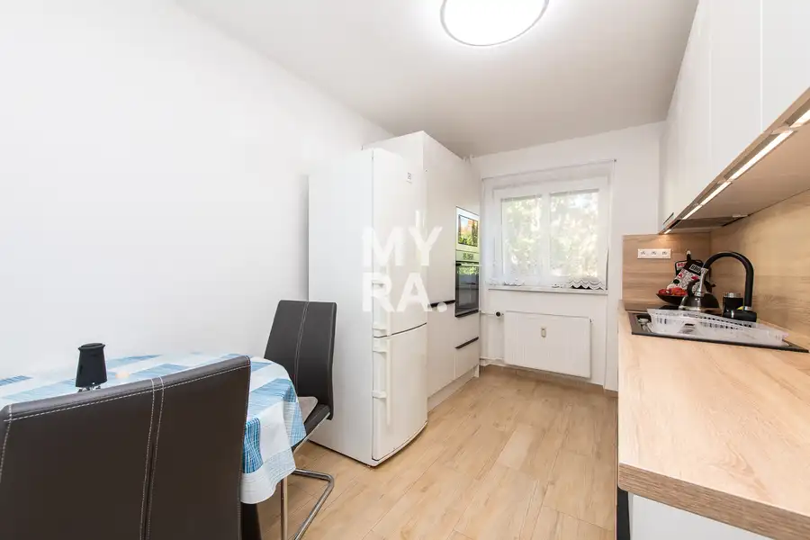
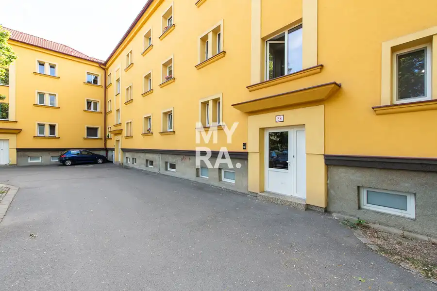

Priestranný 2-izbový byt 55 m² s veľkou pivnicou – Štúrova, Prešov
Prešov









- Dispozícia2-izbový
- Plocha55 m²
- StavČiastočná rekonštrukcia
- VlastníctvoOsobné
O nehnuteľnosti
MYRA realitné centrum ponúka na predaj priestranný 2-izbový byt s výmerou 55 m² na Štúrovej ulici, len 5 min. pešo do centra mesta Prešov.Byt sa nachádza na vyvýšenom prízemí menšieho tehlového bytového domu iba so 6 bytmi. Vďaka menšiemu počtu bytov má dom pokojnejší a komornejší charakter a môže byť zaujímavou alternatívou k bývaniu vo veľkom panelovom dome.DispozíciaByt má praktické a vzdušné dispozičné riešenie.Zo vstupnej chodby je prístup do samostatnej kuchyne, kúpeľne a obývacej izby, z ktorej sa následne prechádza do samostatnej spálne.Kuchyňa ponúka dostatok priestoru nielen na kuchynskú linku, ale aj na plnohodnotný jedálenský stôl.Kúpeľňa má murované jadro a je vybavená sprchovacím kútom, umývadlom a WC. Výhodou je aj vlastné okno, vďaka ktorému je možné kúpeľňu prirodzene vetrať.Obývacia izba aj spálňa sú príjemne priestranné a presvetlené. Orientácia bytu je východ – západ, takže prirodzené svetlo sa do bytu dostáva v priebehu rôznych častí dňa.Stav bytuByt je po staršej rekonštrukcii, zachovalý a udržiavaný a v súčasnom stave je plne funkčný.V byte bolo realizované murované jadro, omietky a stierky, v chodbe a kuchyni je dlažba, v obytných miestnostiach drevené podlahy. Vykurovanie zabezpečujú radiátory.Nový majiteľ môže byt ďalej užívať v jeho súčasnom stave alebo ho časom modernizovať podľa vlastných predstáv.Tehlový bytový dom Samotný bytový dom je tehlový, zateplený a má približne 50 cm hrubé obvodové múry.Strecha bytového domu bola obnovená približne v rokoch 2019 – 2020.Výhodou domu je predovšetkým jeho menšia veľkosť – nachádza sa v ňom iba 6 bytových jednotiek, čo prináša väčšie súkromie a pokojnejšie bývanie.Nadštandardne veľká murovaná pivnicaK bytu patrí aj veľká murovaná pivnica s rozmermi približne 3,25 × 2,90 m.Poskytuje výrazne viac úložného priestoru ako bežné bytové pivnice a bez problémov poslúži na bicykle, športové vybavenie, sezónne veci alebo ako praktický sklad.Kúpa dnes, odovzdanie neskôrŠpecifikom tejto ponuky je možnosť kúpiť si byt s predstihom.Súčasný majiteľ dokončuje výstavbu rodinného domu a predpokladá svoje presťahovanie do leta 2027. Byt preto ponúkame najmä klientovi, ktorý nepotrebuje nové bývanie okamžite, ale chce si vhodnú nehnuteľnosť zabezpečiť už teraz.Pre takéhoto kupujúceho môže byť odložené odovzdanie naopak výhodou – má dostatok času na prípravu sťahovania, financovania či budúcej úpravy bytu bez časového tlaku.Predpokladané odovzdanie bytu je najneskôr do konca leta 2027. Presný termín a podmienky užívania bytu do jeho odovzdania budú dohodnuté s kupujúcim a jednoznačne upravené v zmluvnej dokumentácii.Základné informácievýmera bytu: 55 m²dispozícia: 2-izbový bytpodlažie: vyvýšené prízemiekonštrukcia: tehlaorientácia: východ – západstav: po staršej rekonštrukcii, zachovalý a udržiavanýjadro: murovanépivnica: murovaná, cca 3,25 × 2,90 mbytový dom: iba 6 bytovsprávca: Spravbytkomfortmesačné náklady: približne 180 € pri jednej osobeparkovanie: rezidentsképredpokladané odovzdanie: do leta 2027Byt môže byť vhodnou voľbou pre jednotlivca, pár alebo menšiu rodinu, ktorá plánuje svoje budúce bývanie s predstihom. Rovnako môže osloviť rodičov kupujúcich nehnuteľnosť pre svoje dieťa alebo klienta, ktorý chce kúpiť byt dnes, ale nepotrebuje ho okamžite užívať.Cena: 165 000 €Ak vás naša ponuka zaujala, pre viac informácií alebo dohodnutie osobnej obhliadky ma neváhajte kontaktovať. Rád vám poskytnem bližšie informácie a prevediem vás nehnuteľnosťou osobne.Ing. Martin Pončákriaditeľ, maklérrealitné centrum MYRATkáčska 4, 080 01 Prešov+421 903 433 337martin.poncak@myrapoint.skwww.myrapoint.sk
Parametre
- Cellar area
- 9 m²
- Cena vrátane energií
- Nie
- Druh
- 2 izbový byt
- Dátum zverejnenia
- 10. 09. 2026
- Energie
- 180
- Orientácia
- Západná, Východná
- Počet izieb / miestností
- 2
- Počet nadzemných podlaží
- 3
- Počet pivníc
- 1
- Počet vonkajších parkovacích miest
- 1
- Prechodová izba
- Áno
- Stav nehnuteľnosti
- Čiastočná rekonštrukcia
- Telekomunikácie
- Internet, Káblová TV
- Typ
- Predaj
- Typ konštrukcie
- Tehlová
- Umiestnenie
- Zvýšené prízemie
- Vlastníctvo
- Osobné
- Vybavenie
- Pivnica, Verejné parkovanie
- Vykurovanie
- Ústredné
- Zariadenie
- Čiastočne zariadené
- Úžitková plocha
- 55 m²